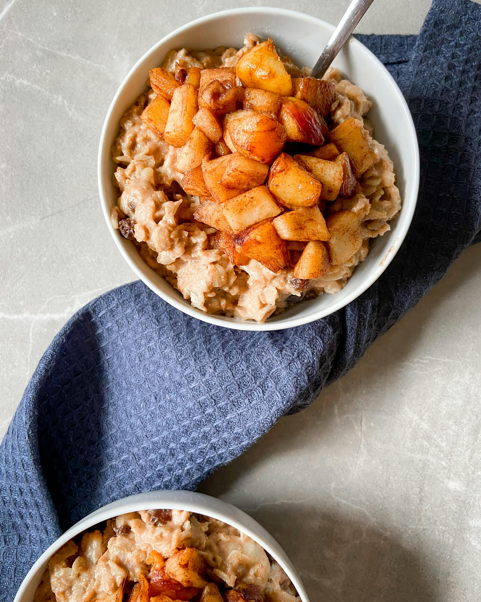

Apple Cinnamon Oatmeal
Home

Description
This creamy apple cinnamon oatmeal recipe is filled with cozy flavors. Perfect for mornings in cold parts of the year.
Ingredients
- ½ cup rolled oats
- 1 cup water or milk
- ½ tablespoon maple syrup, brown sugar or coconut sugar (optional)
- ¼ - ½ teaspoon ground cinnamon
- ½ teaspoon vanilla
- pinch of sea salt
- 2 tablespoons chopped pecans, for topping
- ½ cup diced apples
- 2 teaspoons maple syrup
- ¼ teaspoon cinnamon
Steps
- In a small saucepan combine diced apples, maple syrup and cinnamon and saute for a few minutes
until apples are soft. Set aside.
-
Add oats, water, maple syrup, cinnamon, vanilla and salt to a saucepan over medium-high heat.
Bring mixture to a low boil, reduce heat to a low simmer and continue to cook for about 5-7 minutes;
stirring occasionally. Oatmeal is ready when the oats have soaked up most of the liquid and are creamy.
-
Transfer to a bowl and top with cinnamon apples, nuts, a bit of cinnamon and a sweetener if preferred.